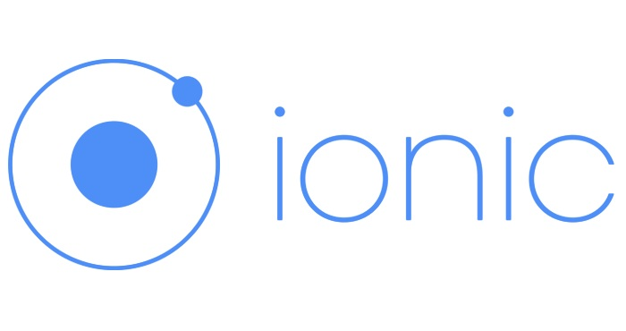
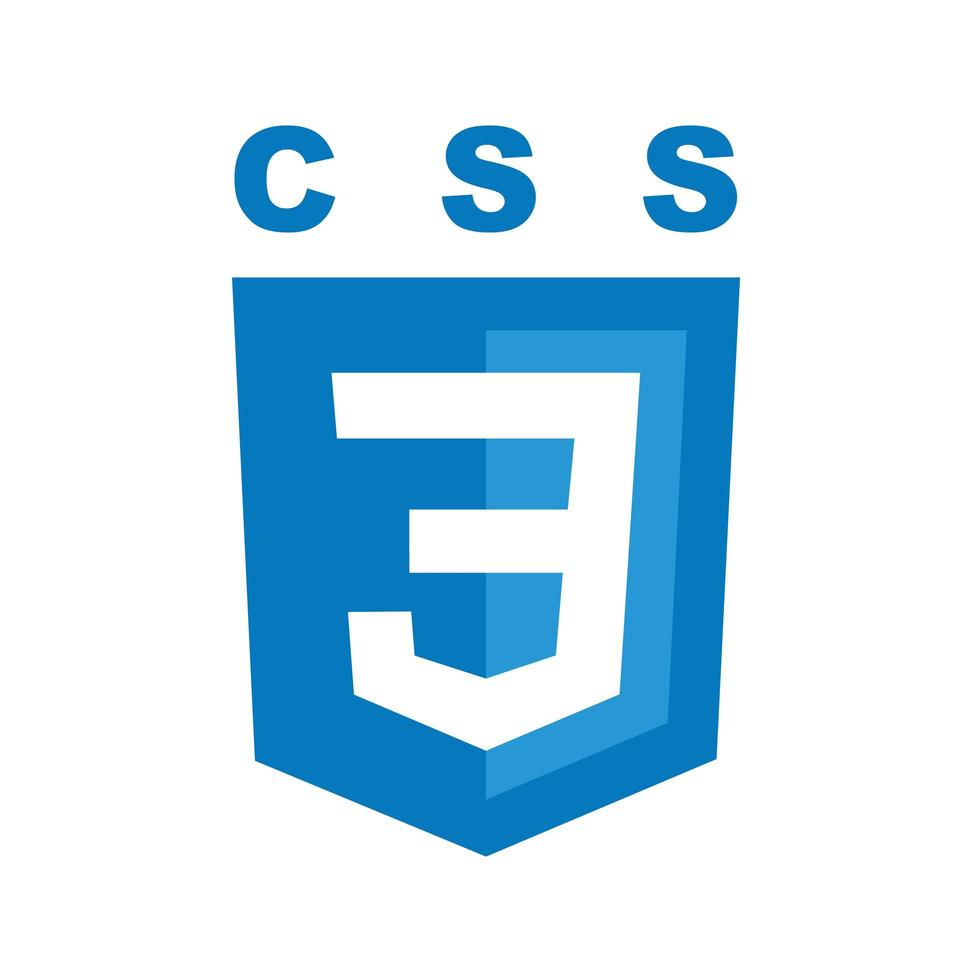
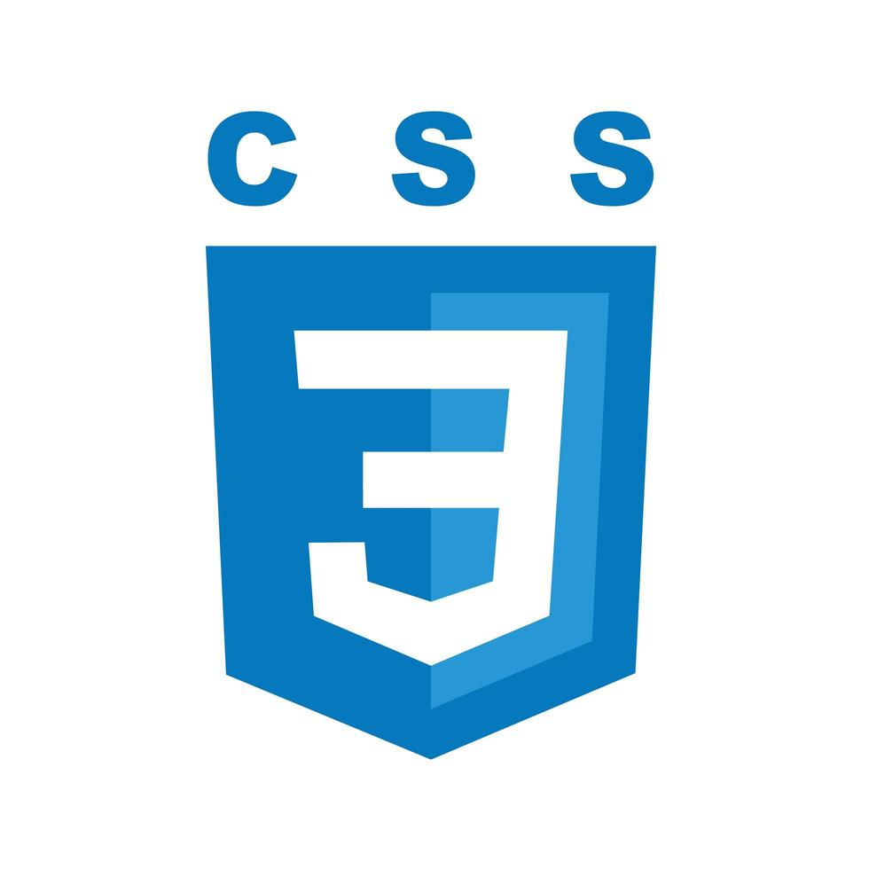
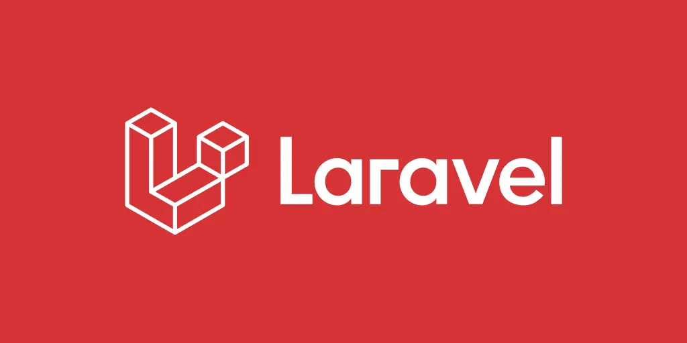
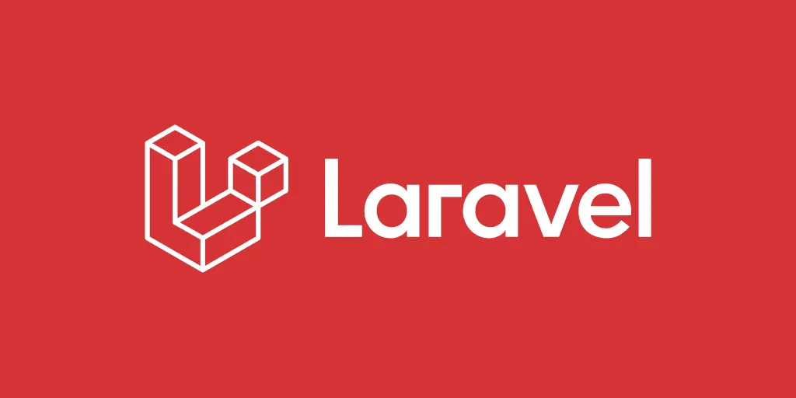

Menu
Este es el contenido del Menu a futuro
Acerca de Inonic

¿Qué es?
Es un conjunto de herramientas de interfaz de usuario de código abierto
para crear aplicaciones móviles, web y de escritorio multiplataforma
utilizando tecnologías web como HTML, CSS y JavaScript/TypeScript.
Herramientas que he utilizado
 HTML

CSS
HTML

CSS
 JAVASCRIPT

LARAVEL
JAVASCRIPT

LARAVEL